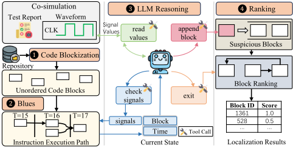
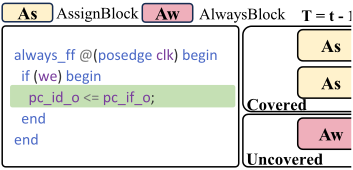
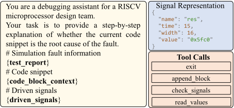
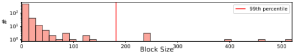
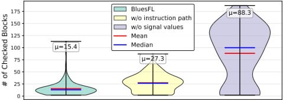
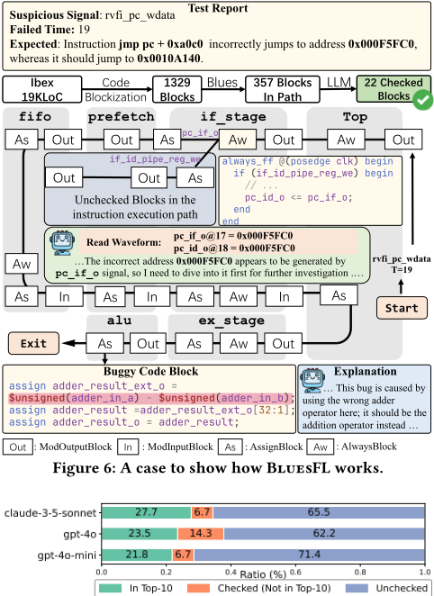

Debug Like a Human: Scaling LLM-Based Fault Localization to Processor Design via Block-Level Instruction-Oriented Slicing
像人类一样调试：通过块级指令导向切片将基于LLM的故障定位扩展至处理器设计
简介
论文针对大规模处理器设计中故障定位耗时、现有LLM方法仅适用于模块级设计的问题，提出块级LLM故障定位框架BluesFL。方法上，先以数据流驱动的代码块化压缩代码上下文，再用Block-Level Instruction-Oriented Slicing (Blues)算法构建带时间戳的指令执行路径图，最后通过工具调用让LLM模拟人类调试行为：检查可疑信号、回溯驱动块并从波形读取信号值。在约19K行SystemVerilog的RISC-V核Ibex上注入119个bug进行评估，Top-1定位24个bug，较SOTA基线LiK（7个）提升242.9%，平均每bug成本仅$0.257。消融实验表明信号值与执行路径缺一不可，去掉信号值读取后平均检查块数从15.4增至88.3、每bug成本上升609%。主要局限是约70%失败案例中LLM过早终止调试、未检查到buggy块。
问题
现有硬件故障定位（FL）技术主要面向通用或模块级硬件设计，尚无针对处理器功能bug的专门FL方法；现有方法未有效利用指令执行覆盖（流水线使指令执行跨模块、跨周期，粗粒度区间覆盖数据被in-flight指令污染），很少利用具体信号值，且LLM难以处理超出上下文窗口的project级代码，导致大规模处理器设计中的bug定位仍依赖人工逐行审查。
方法
BluesFL构建于co-simulation验证框架之上，从失败指令测试报告(I, sig, t, E)出发：(1) 数据流代码块化——按SystemVerilog可综合子集将代码聚为ModInputBlock/ModOutputBlock/AssignBlock/AlwaysBlock四类块，保留局部语义并压缩上下文（99%的块不超过200行）；(2) Blues切片算法——Intra-Block Analysis做块内数据流分析并按组合/时序块类型推断时间戳，Inter-Block Analysis排除指令执行未覆盖的块，构建带时间标注的指令执行路径图G；(3) LLM推理与排序——LLM通过append_block/check_signals/read_values/exit等工具调用在状态(b,t)上迭代分析，从波形读取关键信号值辅助推理，最终对可疑块按置信度打分排序。原型用sv-parser解析AST、Verilator仿真并生成波形，约12KLoC Rust实现，默认使用GPT-4o。
关键结果
在Ibex（约19KLoC SystemVerilog，119个注入bug）上，Top-1/Top-5/Top-10分别定位24/28/28个bug，Top-1较最佳baseline LiK（7个）提升242.9%
平均每个bug定位成本仅$0.257
消融实验：去掉信号值读取（read_values）后，平均检查块数从15.4增至88.3，每bug成本从$0.257升至$1.821（609%增加）；去掉指令执行路径后LLM会访问未覆盖块并产生误报，性能同样下降
案例研究：Ibex被划分为1,329个块，经Blues后指令执行路径仅含357块，LLM实际只检查22个块即定位到alu模块中的bug
99%的代码块不超过200行（除instruction decoder等少数特殊模块）
创新点
据论文所述，这是首个针对处理器功能bug的FL技术。区别于现有slicing-based方法（可疑集过大难以人工审查）、spectrum-based方法（依赖失败用例数量、覆盖数据被in-flight指令污染）和module-level LLM方法LiK（忽略动态处理器状态且受上下文窗口限制），BluesFL通过数据流块化+带时间戳的指令执行路径切片+波形信号值读取，让LLM在project级设计上模拟人类调试员跨空间、跨时间追踪信号传播的行为。
团队参考意义
相关度级别：high
命中能力域：2.4 设计验证方法学 | 2.7 EDA/验证自动化与 AI 辅助
理由：论文直接命中2.7（LLM/AI辅助bug分析）与2.4（bug triage与debug方法学）两个能力域：其LLM agent式故障定位、数据流块化上下文压缩、波形信号值辅助推理等核心技术，可迁移到团队大规模SystemVerilog IP（LPDDR/HBM/UCIe PHY与controller）回归失败后的debug流程，直接对应团队'bug triage与debug方法学'和'LLM/AI辅助验证/bug分析'的职责范围。需要说明的是，指令执行路径切片部分依赖处理器的co-simulation与指令驱动特性，对存储/互连等非指令驱动IP需适配为事务/协议级执行路径，但整体框架、工具化设计与'块化+时间戳+信号值'的思路对缩短团队debug周期、沉淀验证自动化方法学有直接参考价值。
建议动作：深入精读并做内部分享
中文全文
arXiv:2605.17290v1 [cs.SE] 2026年5月17日
Debug Like a Human: Scaling LLM-based Fault Localization to Processor Design via Block-Level Instruction-Oriented Slicing
Zizhen Liu
国防科技大学
中国湖南长沙 zizhen_liu@nudt.edu.cn
Jiayu He
国防科技大学 中国长沙 hejy47@nudt.edu.cn
Yan Lei
重庆大学 中国重庆 yanlei@cqu.edu.cn Xiaoguang Mao ∗ 国防科技大学 中国长沙 xgmao@nudt.edu.cn Yihao Qin 国防科技大学 中国长沙 yihaoqin@nudt.edu.cn Jianjun Xu 国防科技大学 中国长沙 jjxu@nudt.edu.cn
ACMReference Format:
Zizhen Liu, Xiaoguang Mao ∗, Deheng Yang ∗, Jiayu He, Yihao Qin, Guangda Zhang, Yan Lei, Jianjun Xu, and Jiang Wu. 2026. 像人类一样调试：通过块级面向指令切片将基于LLM的故障定位扩展至处理器设计。载于第63届ACM/IEEE设计自动化会议（DAC '26），2026年7月26-29日，美国加利福尼亚州长滩。ACM，美国纽约州纽约，7页。https://doi.org/10.1145/3770743.3804145
1 Introduction
现代处理器包含数百万行硬件描述语言（HDL）代码，以提升性能并扩展功能。然而，这种日益增长的复杂性也使其极易出现设计缺陷，这些缺陷可能导致严重的功能错误 [8]、性能下降 [9]，甚至关键的安全漏洞 [15, 16]。在处理器源代码中定位缺陷是开发人员修复这些缺陷的前提。然而，这一调试过程仍然是处理器开发中最耗时的阶段之一。根据近期调查，验证相关任务约占硬件开发总工作量的 60% [10]。因此，针对大规模处理器设计，自动定位 HDL 源代码（如 Verilog）中的缺陷对于实现敏捷开发至关重要，因为低效的调试会直接影响设计生产力并削弱市场竞争力。
为帮助验证工程师自动检测处理器缺陷，已有多种技术被提出 [11, 12, 19, 22, 28]。然而，大多数方法主要聚焦于检测，而将缺陷在源代码中的定位任务留给开发人员 [18]。一旦检测到缺陷，工程师通常需要检查可疑信号，并人工审查 Verilog 代码以找出出错的代码行。这种人工调试过程既耗时又低效。为减轻这一负担，已有大量针对硬件设计的故障定位（FL）技术被提出。最近，基于大语言模型（LLM）的方法 [27] 直接从 Verilog 模块预测出错的代码行，展现出显著的
Deheng Yang ∗
军事科学院，中国北京 dehengyang@outlook.com
Guangda Zhang 军事科学院，中国北京
zhanggd_nudt@hotmail.com
Jiang Wu
军事科学院，中国北京
wujadeon@outlook.com
Abstract
现代处理器设计代码中的故障定位是处理器验证过程中至关重要却十分耗时的一个环节。尽管近期基于大语言模型（LLM）的模块级硬件设计技术已展现出可喜的成果，但在大规模、项目级处理器设计中自动定位缺陷仍然具有挑战性。本文提出了 BluesFL，一种新颖的面向处理器设计的块级基于 LLM 的故障定位框架。受工程师调试处理器方式的启发，我们首先提出了一种基于数据流的代码分块方法，以引导 LLM 关注关键的局部代码上下文。我们进一步提出了一种块级面向指令的切片（Block-level Instruction-Oriented Slicing，Blues）算法，使 LLM 能够通过分析指令执行路径和处理器状态来模仿人类推理。我们在一个包含 1.9 万行 SystemVerilog 代码的真实 RISC-V 处理器核上对 BluesFL 进行了评估。实验结果表明，BluesFL 在 Top-1 上正确定位了 24 个缺陷，相比现有最先进方法（7 个缺陷）提升了 242.9%。成本分析表明，BluesFL 定位单个缺陷平均仅需 0.257 美元。
CCS Concepts
· 硬件 → 功能验证；EDA 方法学；· 计算方法学 → 人工智能。
Keywords
故障定位，处理器验证，大语言模型
∗ 共同通讯作者：Xiaoguang Mao 和 Deheng Yang。

本作品采用知识共享署名 4.0 国际许可协议进行许可。DAC '26，美国加利福尼亚州长滩
© 2026 版权归所有者/作者所有。
ACM ISBN 979-8-4007-2254-7/2026/07
Zizhen Liu、Xiaoguang Mao ∗、Deheng Yang ∗、Jiayu He、Yihao Qin、Guangda Zhang、Yan Lei、Jianjun Xu 和 Jiang Wu
前景。尽管现有技术已在通用或模块级硬件设计中证明了其有效性，但面向真实项目级处理器设计代码的故障定位（FL）目前仍处于早期阶段，并存在以下局限性：
局限性 1：据我们所知，目前尚未有针对处理器功能缺陷的专门 FL 技术得到研究。处理器作为指令驱动的硬件，本质上比通用硬件模块（如存储器控制器、算术逻辑单元（ALU））更为复杂且独特。因此，为通用硬件设计的 FL 技术对处理器可能效果较差，因为适用于小规模硬件的假设在处理器领域中可能不成立。例如，基于切片的方法 [7, 26] 通过数据流分析产出一组可疑代码行。对于大多数硬件模块而言，这一集合足够小，可以进行人工审查；但在大规模处理器设计中，该集合会变得相当庞大，使得人工审查不再切实可行。因此，需要专门的技术来实现处理器设计中有效的缺陷定位。
局限性 2：现有的硬件 FL 技术缺乏对指令执行覆盖率的有效利用。现代处理器采用流水线技术同时执行多条指令，使得指令执行同时跨越空间和时间两个维度。一条指令从取指到提交阶段的执行，在空间上跨越多个模块，在时间上跨越多个周期。现有的基于频谱的硬件 FL 技术 [24] 通常依赖于在仿真区间上进行的粗粒度、基于范围的覆盖率收集。这样一来，某条指令的覆盖率数据可能被其他在途指令污染，从而降低定位准确性。因此，准确捕获每条指令的执行路径至关重要。
局限 3：现有的硬件故障定位（FL）技术很少利用具体的信号值来辅助定位。信号值对于人类开发者理解硬件行为至关重要 [18]。然而，当前的硬件 FL 技术很少利用这一信息，因为这样做需要高级的语义理解能力。大语言模型（LLM）的最新进展使得解读信号值以推理指令行为成为可能。尽管如此，用处理器波形来提示 LLM 仍然具有挑战性。处理器仿真会在数千个周期内生成数千个信号，产生极其庞大的波形。确定应在哪些周期向 LLM 提供哪些信号以辅助定位，仍然是一个非平凡的问题。
局限 4：LLM 难以在过大的代码上下文中定位缺陷。现代处理器项目通常由大量模块文件组成，其总规模超出了 LLM 的上下文窗口限制。当被提示以过大的代码上下文时，LLM 往往会失去焦点并忽略关键信息 [17]。与模块级硬件设计不同——在模块级设计中，模型可以检查整个设计——处理器规模的代码引入了大量噪声，阻碍了模型识别细微缺陷的能力。因此，为 LLM 提供关键且紧凑的代码上下文，对于在大规模处理器设计中实现准确的故障定位至关重要。
为了解决上述局限，我们从开发者的调试经验中得出两个关键洞察：（1）开发者主要关注具有数据流关系的局部代码区域；（2）他们通过追踪指令执行路径来理解处理器行为。受这些观察的启发，我们首先提出一种基于数据流的代码分块方法，该方法在保持代码规模紧凑的同时保留局部语义（ 局限 4 ）。在此基础上，我们提出 BluesFL——一个面向大规模处理器设计的基于 LLM 的块级故障定位框架（ 局限 1 ）。BluesFL 通过审查指令执行路径并为含缺陷的代码块分配可疑度评分来模拟人类的调试行为。具体而言，我们提出了一种新颖的块级面向指令切片（Block-Level Instruction-Oriented Slicing，Blues）算法，用于引导 LLM 关注指令执行的代码块（ 局限 2 ），并通过时间标注块纳入信号值，从而增强其对指令行为的理解（ 局限 3 ）。
总而言之，本文做出了以下贡献：
2.1 Co-simulation-based Processor Verification
在基于协同仿真的验证中，由 HDL 编写的处理器与软件参考模型执行相同的指令，并对二者的架构状态进行比较以确保正确性 [13]。两个模型并行运行，并在每条指令提交（commit）阶段对其状态进行检查。多个开源处理器核已采用该验证框架 [2-4]。因此，我们在该基于协同仿真的框架之上构建了 BluesFL，通过利用细粒度的指令级信息来实现精确的故障定位。协同仿真结束后，在指令 𝐼 和时刻 𝑡 检测到信号 𝑠𝑖𝑔 的架构状态不匹配，其预期行为以自然语言表示为 𝐸。该失败指令的最终测试报告表示为 ( 𝐼, 𝑠𝑖𝑔, 𝑡, 𝐸 )。一个示例如图 6 所示。
2.2 Fault Localization for Hardware Designs
故障定位（Fault Localization, FL）能够自动识别源代码中的可疑语句，已在软件系统中得到广泛研究 [23]。然而，由于硬件描述语言（HDL，如 Verilog）与软件语言（如 Java）之间存在根本性差异，面向软件的 FL 技术无法直接应用 [24]。因此，研究者开发了针对 HDL 的专用方法。
基于静态切片的方法 [7] 首先识别可疑信号，随后进行数据流分析，将与这些信号相关的所有语句纳入可疑范围。然而，这类方法往往产生过于庞大的可疑集合，导致人工检查困难。基于信号跳变的方法 [26] 利用时钟时序排除未被覆盖的语句，从而缩小集合规模；但它们仅分析故障发生所在的周期，限制了其在多周期指令执行中的有效性。基于频谱的方法 [24] 从通过和失败的测试用例中收集 HDL 覆盖率信息，并为每条语句计算可疑度得分。然而，该方法严重依赖于失败测试的数量来区分通过测试与失败测试之间的覆盖差异。
像人类一样调试：通过块级指令导向切片将基于 LLM 的故障定位扩展至处理器设计 DAC '26，2026 年 7 月 26–29 日，美国加利福尼亚州长滩
近来，研究者提出了基于大语言模型（LLM）的方法 [27]，用于预测 Verilog 模块中存在缺陷的代码行。这类静态方法忽略了处理器的动态状态，因此在应用于大规模处理器设计时精度可能受限。此外，由于 LLM 的输入上下文有限，一次性提供整个项目的代码并不可行，这使得其难以应用于实际的处理器项目。
3.1 Overview
BluesFL 是一种面向处理器设计的块级故障定位方法，旨在定位存在缺陷的代码块。如图 1 所示，在协同仿真（co-simulation）之后，会生成针对失败指令的测试报告。❶ BluesFL 首先使用基于数据流的代码块划分方法，将处理器代码库划分为一组互不重叠的代码块。❷ 接着，我们应用块级面向指令的切片（Block-Level Instruction-Oriented Slicing，Blues）算法来构建指令执行路径，该路径将指令执行期间覆盖的代码块串联起来，并附带时间标注。在该路径中，每个节点包含一个代码块和一个时间戳，用于指示该代码块被覆盖的时间。❸ BluesFL 通过工具调用以类人的方式进行调试：在每个状态 ( 𝑏, 𝑡 ) 下，LLM 分析当前代码块的上下文以识别可疑信号，然后在指令执行图中查询驱动这些信号的代码块。LLM 还可以利用时间标注从波形中读取局部信号值，辅助推理。如果某个代码块被认为是可疑的，则将其加入可疑代码块队列。❹ 该循环运行多轮，直到 LLM 请求退出分析。随后，BluesFL 按分数对所有可疑代码块进行排序，生成最终的定位结果。

3.2 Dataflow-based Code Blockization
3.3 Block-Level Instruction-Oriented Slicing
Even after clustering multiple lines into individual blocks, the number of resulting blocks remains large, making it impractical for LLMs to analyze them one by one. To exclude blocks that are not covered during failing instruction execution, we propose Block-Level Instruction-Oriented Slicing (Blues) algorithm. Blues constructs the instruction execution path as a graph, where each node represents a code block annotated with a timestamp 1 . Blues consists of two complementary components: Intra-Block Analysis , which analyzes the dataflow of suspicious signals within blocks, and InterBlock Analysis , which excludes code blocks that are not covered during instruction execution.
1 Note that all time values in this paper are measured as the number of posedge clock cycles since the start of simulation.
Zizhen Liu, Xiaoguang Mao ∗ , Deheng Yang ∗ , Jiayu He, Yihao Qin, Guangda Zhang, Yan Lei, Jianjun Xu and Jiang Wu
Algorithm 1 summarizes the basic workflow of Blues. Starting from an initial suspicious signal 𝑠𝑖𝑔 and its timestamp 𝑡 obtained from the test report, Blues iteratively traces backward through the blocks that drive this signal. At each step, Intra-Block Analysis identifies the driven signals (i.e., the signals used to compute the
Inter-
suspicious signal) from the input set 𝑉 𝑖 of the current block. Block Analysis then finds the driven blocks, which are the blocks whose output sets 𝑉 𝑜 contains these driven signals. This process annotates each block with its corresponding timestamp, forming a node ( 𝑏, 𝑡 ) and adding dependency edges between nodes in the instruction execution path 𝐺 . The recursion continues until no fur-
ther expansion of is possible. Each node
(
is covered at time
𝑏, 𝑡
)
in
indicates that
. Note that the same block may appear
in multiple nodes with different timestamps, reflecting repeated
coverage during this instruction execution.

we
𝑠
∈
𝑜
of block
𝑖
3.3.1 Intra-Block Analysis. For an output signal at time 𝑡 , Intra-Block Analysis identifies the driven signals within that drive 𝑠 by performing dataflow dependency analysis (line 14). Each identified driven signal is annotated with a new timestamp indicating that the value of 𝑠 at time 𝑡 is propagated from the values
′
of the driven signals at time 𝑡 ′ . The timestamp 𝑡 ′ is inferred based on the type of block. For combinational blocks (e.g., ModInputBlock , ModOutputBlock , AssignBlock , or an AlwaysBlock without a clock), assignments are always covered, so 𝑠 at time 𝑡 is driven by the values of the driven signals at the same time 𝑡 (line 15-16). For sequential blocks (e.g., an AlwaysBlock with a clock), if the assignment to 𝑠 is covered at time 𝑡 - 1, indicating that the value of 𝑠 at time 𝑡 is computed by the driven signals at time 𝑡 - 1, then these driven signals at time 𝑡 - 1 are collected for backward analysis (line 18-19). If the assignment is not covered at 𝑡 - 1, the register retains its previous value, so 𝑠 at time 𝑡 holds its own value at time 𝑡 - 1 (line 21). These driven signals and associated timestamps are provided to the LLM when it inspects signal 𝑠 in block 𝑏 , ensuring that it focuses only on relevant signals and reducing interference from unrelated ones.
3.3.2 Inter-Block Analysis. After identifying the driven signals of 𝑠 in block 𝑏 at time 𝑡 , Inter-Block Analysis determines which blocks actually compute the values of these signals (i.e., driven blocks) and inserts the corresponding predecessor nodes for ( 𝑏, 𝑡 ) in the instruction execution path 𝐺 (line 8-11). Specifically, for each driven signal annotated with timestamp 𝑡 ′ in block 𝑏 through Intra-Block Analysis , the block whose output signal set contains this driven signal is identified as a driven block 𝑏 ′ , forming the corresponding node ( 𝑏 ′ , 𝑡 ′ ) . Then, this node is inserted into the path 𝐺 , adding an edge from ( 𝑏 ′ , 𝑡 ′ ) to ( 𝑏, 𝑡 ) . When the LLM identifies suspicious
T = t
Aw signals (i.e., a subset of driven signals) in block 𝑏 and wants to check code blocks that compute these signals, it can request the instruction execution path 𝐺 to get block 𝑏 ′ .
As shown in Figure 2, if the green line is covered at time 𝑡 - 1, driven signals of pc_id_o include both pc_if_o and we at 𝑡 - 1. Then, after Inter-Block Analysis , two AssignBlock s that drive these signals are connected to this AlwaysBlock . If this line is not covered,
the register pc_id_o retains its value, meaning it is driven by itself
from time
3.4
-
1 through the same AlwaysBlock
LLM Reasoning and Ranking

我们通过提示词引导大语言模型（LLM）进行推理，并在每个状态 ( 𝑏, 𝑡 ) 下通过工具调用做出决策。如图3所示，LLM 评估当前代码块上下文是否为该缺陷的根本原因。如果该代码块被判定为可疑，LLM 会调用 append_block 工具将 𝑏 追加到可疑代码块队列中。Blues 通过块内分析（Intra-Block Analysis）获得的被驱动信号以 JSON 数组的形式提供在提示词中，每个信号按照图3所示的格式表示。如果 LLM 需要进一步检查，它会通过 check_signals 工具查询一组可疑信号名称。LLM 选择的所有信号必须从提供的列表中选取，以确保 LLM 仅关注执行路径内的代码块。Blues 通过指令执行路径 𝐺 将这些信号映射到驱动它们的代码块，生成新的状态供 LLM 检查。由于每个代码块都标注了时间戳，LLM 可以使用 read_values 工具从波形中检索关键信号的值，从而辅助理解指令行为。该循环执行多轮，直到 LLM 确认根本原因位于可疑队列中并调用 exit 工具。随后，LLM 为每个可疑代码块分配一个介于 0 和 1 之间的置信度分数，生成一个经过排序的可疑代码块列表。
4.1 Experiment Setup
4.1.1 基准测试。我们采用生产级质量的开源 RISC-V 处理器核 Ibex [3] 来评估 BluesFL。选择该处理器核的原因在于其在开源硬件社区中的广泛采用（GitHub 星标达 1.7K），以及其以约 19 KLoC 的 SystemVerilog 代码实现，为评估 BluesFL 在真实处理器项目上的性能提供了现实的规模。遵循先前工作 [20, 27]，我们按照相同的变异规则向 Ibex 注入缺陷。在联合仿真框架中执行 CoreMark [1] 测试程序，以触发注入的缺陷。若验证失败，我们记录缺陷所在行并保存修改后的代码。总共注入 119 个缺陷以构建我们的基准测试集。
4.1.2 基线方法。我们将 BluesFL 与面向硬件描述语言（HDL）的最先进故障定位（FL）技术进行比较，包括 Cirfix [7]（基于静态切片）、Strider [26]（基于转换）、Tarsel [24]（基于频谱）以及 LiK [27]（基于 LLM）。LiK 需要同时提供模块代码及其规格说明；因此，我们遵循 LiK 的数据集构建方法，使用 GPT-4 将 Ibex 模块总结为简洁的规格说明。由于 LiK 仅能在单个模块内定位缺陷，我们在项目级评估中手动提供包含缺陷的模块文件。尽管这为 LiK 提供了相对于 BluesFL 的额外先验知识，但确保了比较的可行性。
像人类一样调试：通过块级面向指令的切片将基于 LLM 的故障定位扩展至处理器设计 DAC '26，2026 年 7 月 26-29 日，美国加利福尼亚州长滩
我们还实现了一种面向软件的基于 LLM 的故障定位方法 Agentless [25]，并将其适配到处理器场景。遵循其面向代码仓库的工作流程，Agentless 首先使用 LLM 从测试报告和项目结构中识别可能包含缺陷的模块文件，然后将每个可疑文件的完整源代码提供给 LLM 以预测缺陷位置。
4.1.3 实现细节。BluesFL 原型利用 sv-parser [5] 库解析 SystemVerilog 文件的抽象语法树（AST）。我们采用 Verilator [6] 执行仿真并生成波形，以收集信号值和代码覆盖率信息。BluesFL 以约 12 KLoC 的 Rust 实现，其中包含 Blues 算法和基于 LLM 的推理组件。BluesFL 默认使用 GPT-4o 模型。
4.1.4 评估指标。遵循故障定位领域的先前研究 [14, 24]，我们使用 Top𝑁 指标评估 BluesFL，该指标统计在排序列表前 𝑁 个位置中至少出现一个缺陷块的缺陷数量。基于切片的方法仅输出语句集合，而不带可疑度分数。遵循 [24]，我们为每条语句分配 | 𝑆 |/2 的期望排名，其中 | 𝑆 | 为集合大小。LiK 输出单个缺陷行，因此其 Top𝑁 结果在不同 𝑁 取值下保持不变。为公平比较，所有基线结果均对齐到块级别。
4.2 Experiment Results
| Approach | Type | Top-1 | Top-5 | Top-10 |
|---|---|---|---|---|
| Cirfix | Project | 0 | 0 | 0 |
| Strider | Project | 0 | 0 | 0 |
| Tarsel-Jaccard | Project | 0 | 0 | 0 |
| Tarsel-Ochiai | Project | 0 | 0 | 2 |
| Tarsel-Tarantula | Project | 3 | 4 | 7 |
| LiK | Module | 7 | 7 | 7 |
| Agentless | Project | 13 | 16 | 16 |
| BluesFL | Project | 24 | 28 | 28 |
| ❶ w/o Signal Values | Project | 13 | 24 | 26 |
| ❷ w/o Instruction Path | Project | 5 | 6 | 6 |
| Approach | Type | Top-1 | Top-5 | Top-10 |
4.2.1 RQ1. BluesFL 的有效性。表 1 总结了 BluesFL 与现有故障定位（FL）基线相比的总体有效性。BluesFL 分别在 Top-1、Top-5 和 Top-10 排名内定位出 24、28 和 28 个缺陷，在 Top-1 准确率上比现有最佳基线 LiK 高出最多 242.9%。
基于切片的方法会生成过大的可疑集合，阻碍了准确的 Top-10 定位。在基于频谱的 FL 指标中，Tarantula 表现最佳，但其总体准确率仍然有限。这些方法依赖于在仿真区间上进行基于范围的覆盖率收集，导致失败指令的覆盖率数据被其他在途指令所污染。
对于基于大语言模型（LLM）的硬件专用 FL 方法 LiK，仅定位出 7 个缺陷，因为 Ibex 中冗长的模块代码阻碍了对缺陷行的精确定位。Agentless 将整个模块文件提供给 GPT-4o，由于代码上下文过长，与 BluesFL 相比同样结果有限。相比之下，BluesFL 采用基于数据流的代码分块来保留紧凑且相关的上下文。如图 4 所示，我们的方法为 Ibex 解析的代码块中有 99% 不超过 200 行，仅有少数特殊模块（如指令译码器）例外。此外，Blues 引导 LLM 仅对指令执行期间覆盖的块进行推理，并利用信号值来全面理解指令行为，从而在所有基线中取得最佳性能。


4.2.2 RQ2. Blues 的有效性。Blues 通过遵循指令执行路径引导 LLM 排除无关的代码块，并借助信号值帮助它们理解处理器行为。我们开展了消融实验，以评估信号值和执行路径对定位缺陷的贡献。在设置 ❶ 中，我们从提供给 BluesFL 的工具中移除 read_values，使 LLM 无法访问波形。在设置 ❷ 中，我们移除由 Blues 获取的指令执行路径，允许 LLM 自由访问任何代码块。
如表 1 所示，❶ 和 ❷ 与 BluesFL 相比均出现性能下降，表明信号值和指令执行路径对于有效的处理器调试都是必不可少的。具体而言，在没有指令执行路径的情况下，LLM 经常访问指令执行期间未覆盖的块，聚焦于无关块并产生误报。有趣的是，我们观察到在没有信号值的情况下，LLM 倾向于访问更多的代码块。如图 5 所示，BluesFL 检查的块的平均数量增加到 88.3，相比之下 BluesFL 为 15.4，导致每个缺陷的成本增加 609%（$0.257 → $1.821）。这表明，在没有信号值的情况下，LLM 需要更多的代码上下文才能对缺陷进行充分推理。
4.2.3 RQ3：在其他大语言模型（LLM）上的性能。我们在三种 LLM 后端上评估 BluesFL：GPT-4o-mini、GPT-4o 和 Claude-3.5Sonnet。GPT-4o-mini 提供了一种低成本的选择，而 GPT-4o 和 Claude-3.5-Sonnet 则具备更强的代码能力。如 Claude-3.5- Top-10 所示
Zizhen Liu, Xiaoguang Mao ∗ , Deheng Yang ∗ , Jiayu He, Yihao Qin, Guangda Zhang, Yan Lei, Jianjun Xu and Jiang Wu
平均成本
26
$0.015
28
$0.257
33
$0.263
alu 模块。
0x000f5fc0
alu 模块不是
| Base Model | Top-1 | Top-5 |
|---|---|---|
| GPT-4o-mini | 17 | 25 |
| GPT-4o | 24 | 28 |
| Claude-3.5-Sonnet | 30 | 33 |
| Base Model | Top-1 | Top-5 |
5.1 How BluesFL works
5.2 Limitation of BluesFL
对现有故障定位（FL）技术在真实处理器设计上的评估表明，面向处理器的故障定位仍处于早期阶段。我们分析了 BluesFL 在不同模型下未能将缺陷定位到 Top-10 以内的案例。如图 7 所示，在这些缺陷中约 70% 的情况下，含缺陷的代码块从未被大语言模型（LLM）检查过，原因在于调试过程过早终止。为进一步提升 FL 性能，未来工作可以探索鼓励 LLM 检查项目中更多代码块的方法，从而实现长距离、跨代码块的推理以及更全面的定位。
5.3 Threats to Validity
LLM 在来自 GitHub 的大规模代码库上进行训练，可能已经接触过我们评估中所使用的正确处理器设计代码，从而可能导致数据泄露。为缓解这一问题，我们通过注入缺陷来确保 LLM 此前未曾接触过这些测试用例。此外，默认 GPT-4o 的糟糕表现（即基线 Agentless）表明该模型并非只是简单记住了正确代码，而 BluesFL 相对于 Agentless 的显著提升则证明了我们方法的有效性。

6 Conclusion
Wepresent a novel LLM-based fault-localization framework for processor designs. Inspired by human debugging, BluesFL analyzes instruction execution paths, inspects processor states, and identifies the most suspicious code blocks. Our dataflow-based blockization reduces code context, allowing LLMs to focus on local dataflow. We further introduce a block-level instruction-oriented slicing algorithm (Blues) that chains instruction-covered blocks with time annotations. Blues enables LLMs to efficiently trace instruction execution and read signal values from large waveforms to reason about instruction behavior. Experimental results on a real-world RISC-V processor core show that BluesFL localizes 24 bugs at Top1, achieving a 242.9% improvement over the best existing baseline.